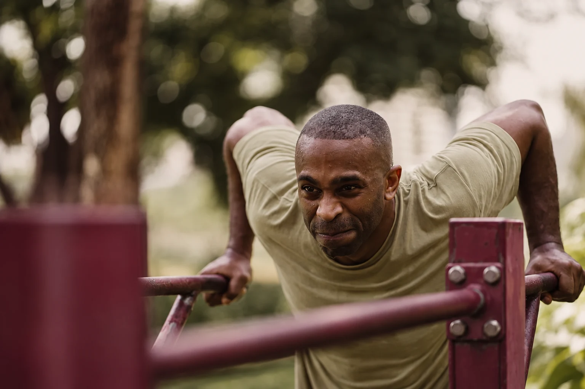
01 / GÜÇ
Güçlen.
İtme, çekme ve bacaklar. Rastgele tekrarlar yerine sağlam temeller.
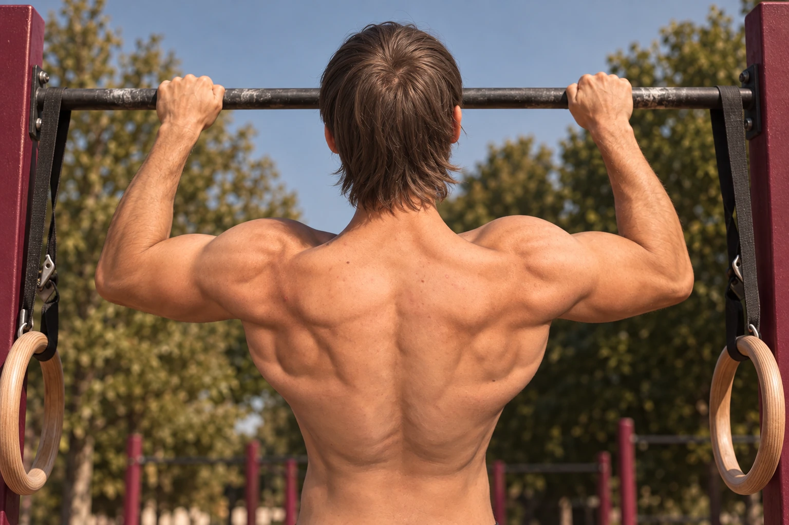
AÇIK HAVA / VÜCUT AĞIRLIĞI ANTRENMANI
Daha az makine. Daha çok sen.
Seni ileri taşıyan küçük bir grupla güç, kontrol ve beceri geliştir.
01 / YÖNTEM
İlk kontrollü şınavın. Sıradaki barfiksin. Amutta daha fazla kontrol. Büyük hedefleri seviyene uygun adımlara ayırıyoruz.

İtme, çekme ve bacaklar. Rastgele tekrarlar yerine sağlam temeller.
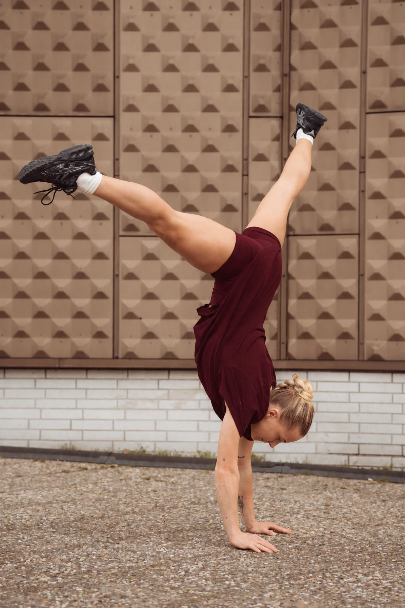
İlk ilerleme adımından yeni becerilere. Kendi hızında.
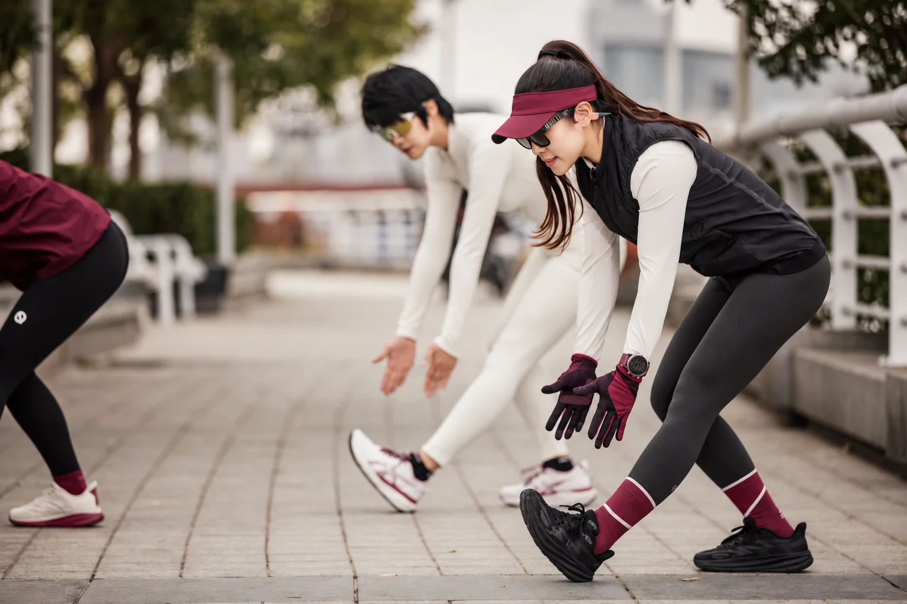
Her antrenmanda aktif hareketlilik ve dengeli eklemler.
HEDEFİN / BAŞLANGICIN
Calisthenics bugünkü seviyenden başlar. Bir odak seç ve sana uygun bir antrenmanın nasıl olabileceğini keşfet.
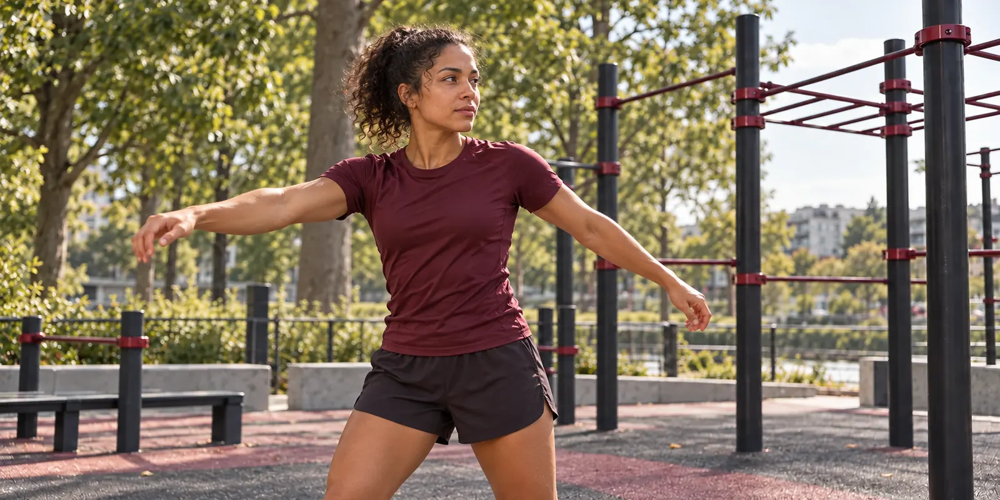
Önce duruşunu, vücut gerginliğini ve temel hareket kalıplarını öğrenirsin. Daha yüksek bir destek, daha kısa hareketler veya yardım başlangıcı uyarlanabilir kılar.
Başlamak için barfiks çekebilmen gerekmez.
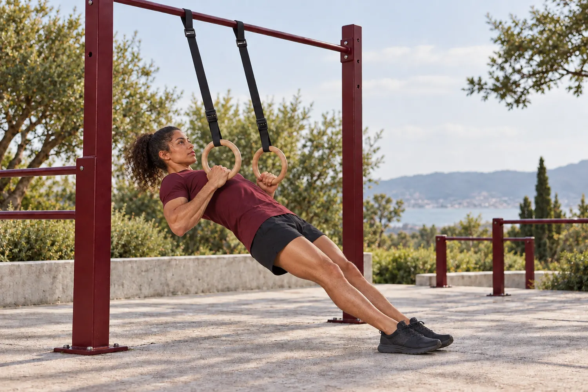
Ahşap halkalar, halka çekişi gibi çekme hareketlerine olanak verir. Vücut açısı ve destek seviyene göre ayarlanır. Kontrollü tekrarlar, dengeli pozisyonlar ve dinlenme, en yüksek zorluktan önce gelir.
İlerleme, aynı egzersizde daha fazla kontrol de olabilir.
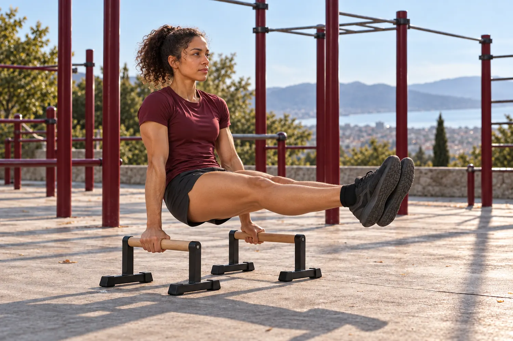
Parallettes, ahşap tutacaklı küçük destek barlarıdır; destek pozisyonları ve L-sit hazırlığında kullanılır. Fotoğrafta ileri seviye bir varyasyon görülür; başlangıcında uygun hazırlık hareketleri yer alır.
Belirli bir süre veya beceri garantisi yoktur.
EGO YOK. KESTİRME YOK.
Henüz barfiks çekebilmen gerekmez.
Sadece başlamaya hazır olman yeterli.
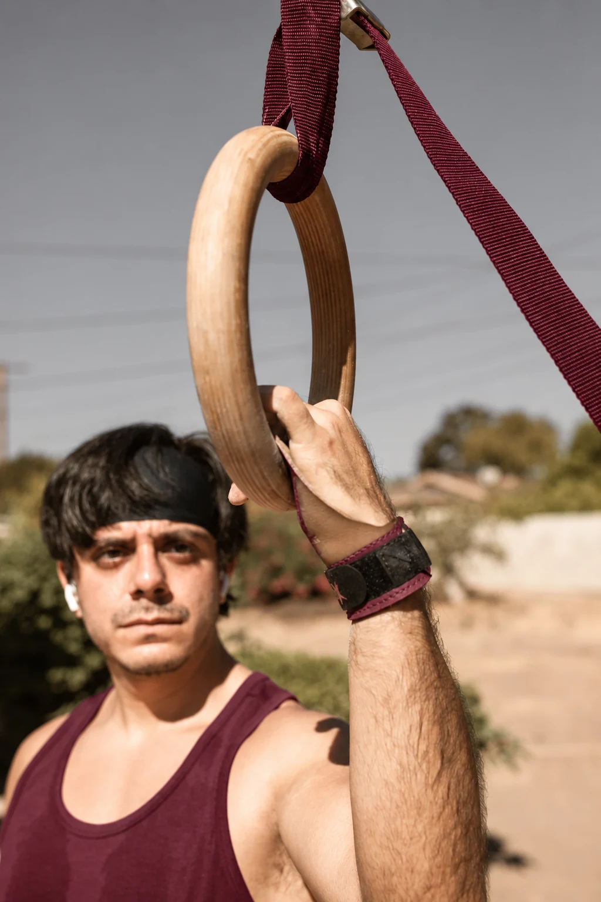
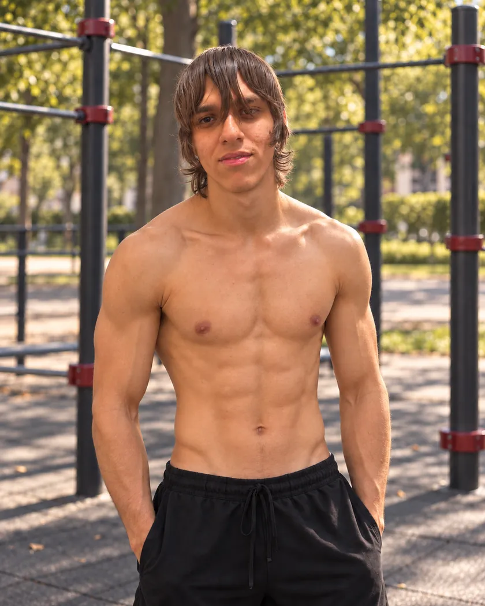
02 / ANTRENMANIN
Kurucusu Taylan Sik
Küçük grup.
Senin için daha fazla ilgi.
Anlaşılır egzersizler, uygun varyasyonlar ve tekniğine dikkat: hareketi hedefli bir antrenmana dönüştürür.
En fazla on kişi: sorulara, geri bildirime ve takip edebileceğin antrenmana yer var.
Birlikte başla ↘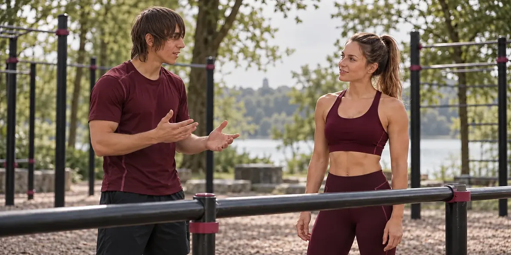
TEKNİK / GERİ BİLDİRİMKÜÇÜK GRUP / NET GÖREV
Seansta en fazla on kişi, kişisel rehberliğe yer açar.
Grup aynı hareket kalıbını çalışırken herkes uygun bir varyasyon kullanabilir. Böylece antrenman ortak, yük ise kişiye göre uyarlanabilir olur.
Görevi ve varyasyonu konuş. Kontrollü bir tekrar nasıl görünür?
Hareketi gözlemle, anlaşılır ipuçları ver ve gerektiğinde kolaylaştır.
Kısaca değerlendir: ne dengeliydi, sonraki denemede neye dikkat edilmeli?
ANTRENMANIN / PLANLI 60 DAKİKA
Her seansın net bir yapısı vardır. Ne çalıştığını bilirsin ve bugünkü seviyene uygun bir varyasyon alırsın.
Hafif hareket et, eklemlerini hazırla ve bugün nasıl hissettiğini konuş. Yük buna göre ayarlanır.
Her seansta bir odak: çekme tekniği, vücut gerginliği veya denge. Önce anla, sonra kontrollü tekrarla.
İtme, çekme, bacak ve gövde. Her turda sınırına gitmek yerine kontrollü tekrarlar ve molalarla çalış.
Yoğunluğu azalt, hareketlilik çalış ve sıradaki küçük antrenman adımını not et.
İçerik ve süreler gruba ve antrenman odağına göre şekillenir.
İLERLEMEN / EGOSUZ
Herkes birlikte çalışır. Herkes aynı varyasyonu yapmaz. İyi ilerleme, tekniğini aşırı zorlamadan seni zorlar.
Dengeli pozisyonlar, kontrollü hareketler ve uygun başlangıç varyasyonu.
Düzenli çalış ve hangi tekrarları gerçekten kontrollü yapabildiğini gözlemle.
Tek bir etkeni değiştir: hareket aralığı, tekrarlar veya varyasyon.
Yeni beceriler için hedefli hazırlık egzersizleri. Hız ve hedefler kişisel kalır.
İlk seansından önce hazırlanmak için zaman ayır. Su ve uygun spor kıyafeti getir; deneyimini ve hedeflerini düşün. Barfiks veya amut yapabilmen gerekmez.
03 / RUTİNİN
Başlangıcını seç. Haftalık üç seans aylık ücrete dahildir. Her seansta en fazla on kişi çalışır.
Güç temelleri · itme ve çekme · kontrollü teknik
Denge · gövde · sıradaki ilerleme adımın
Tüm vücut antrenmanı · hareketlilik · takım enerjisi
Haftada üç seans. Günlük hayatına ve toparlanmana uygun ritmi seç.
04 / DIŞARIDA. BİRLİKTE.
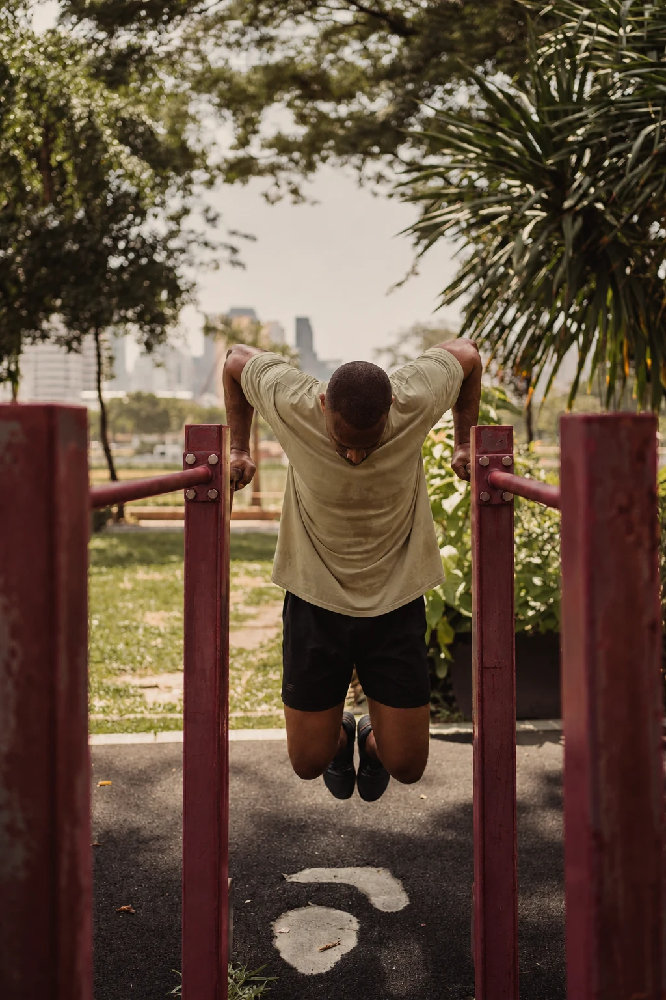
Temiz hava. Açık zihin.
Hareketi keşfet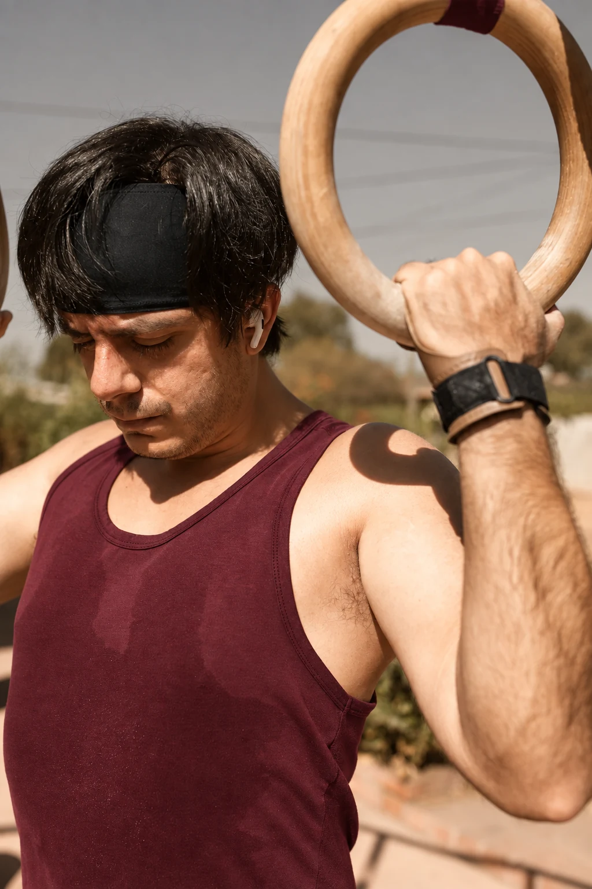
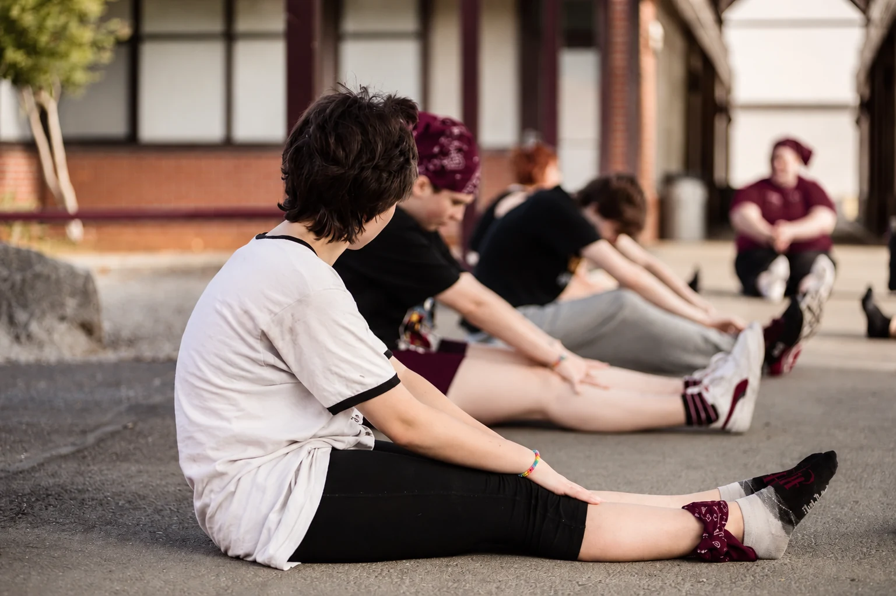
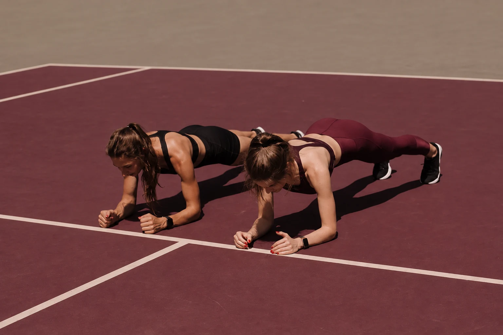
Halkalar her küçük hareketi hissettirir. Sağlam bir duruşla başla, açını seç ve zorluğu adım adım artır.
Egzersizlere göz atTALISTHENICS / PUSH · PULL · SUPPORT
Şınav, barfiks ve dips: görsel aşamalar, teknik ipuçları ve daha kolay bir seçenekle üç temel hareket. Ayrıntılı rehber burada açılır; kayıt gerekmez.
Yetişkinler için genel bilgiler. Hiçbir egzersiz herkesin eklemleri için otomatik olarak hafif değildir. Yükü ve hareket aralığını seviyene uyarla. Ağrı, baş dönmesi veya rahatsızlıkta dur; mevcut şikâyetlerde önce uzman görüşü al.
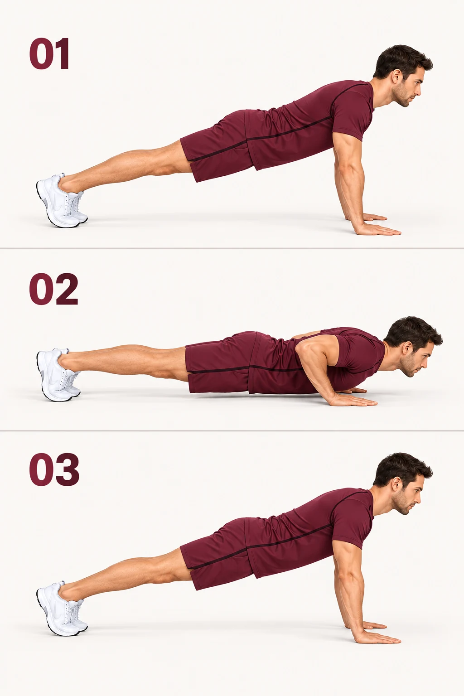
Vücut çizgisini koru, kontrollü alçal ve tekrar yukarı it.
Daha kolay başlangıç
Elleri sağlam bir yüksek yüzeye veya duvara koy. Destek devrilmemeli ve kaymamalı.
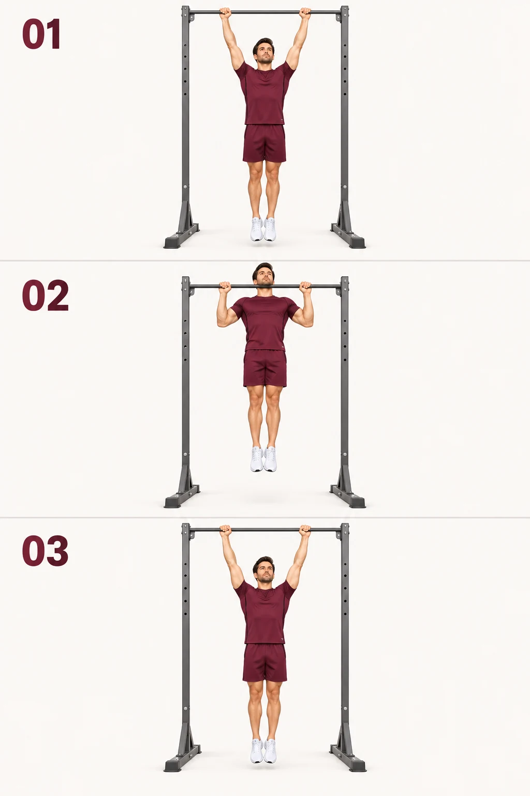
Sakin asılıştan çek, gövdeyi sabit tut ve kontrollü geri dön.
Daha kolay başlangıç
Uygun alçak bir barda ayak desteği kullan. Kurulumu ve desteği eğitmenle belirle; dengesiz nesnelere çıkma.
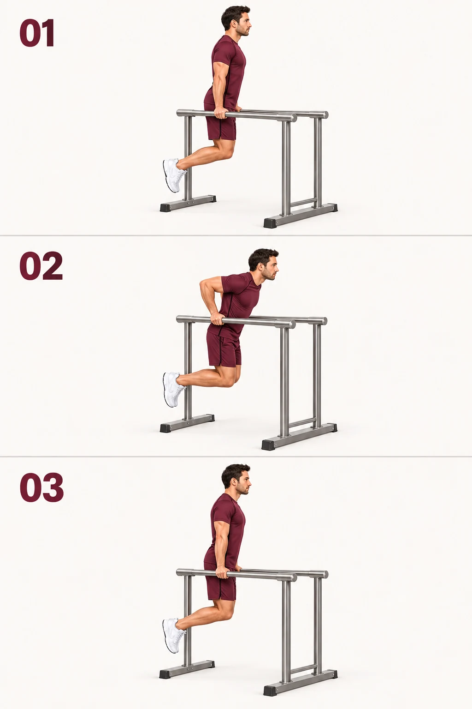
Sabit destek kur, uygun derinliği seç ve yaylanmadan yukarı it.
Daha kolay başlangıç
Uygun alçak barlarda ayak desteği kullan ve önce kısa bir aralık dene. Kurulumu eğitmene kontrol ettir.
Sana uygun seçenek için geri bildirim ister misin?
05 / ÜYELİĞİN
Günlük hayatına uygun bir hizmet. İlerlemene yer veren, kişisel rehberlikli grup antrenmanı.
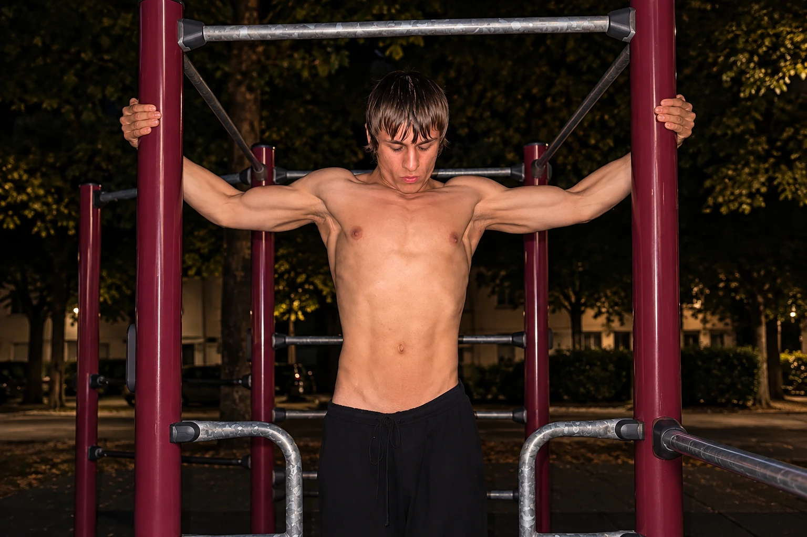
kişi başı / ay · toplam ücret
Bir seans ve antrenman seviyenle başlangıcını planla.
Calisthenics ve esnekliği anlamak
Kuvvet için hareket özgürlüğü, gelişim için dinlenme gerekir. Kontrollü mobiliteyi, uygun antrenman yükünü ve dinlenmeyi bir araya getir.
Düzenli esneme hareket açıklığını artırabilir. Aktif mobilite, bu aralığı kontrol etmeyi de çalıştırır. Daha fazla derinlik ancak telafi hareketleri ve ağrı olmadan kullanılabiliyorsa faydalıdır.
Tek başına esneme sakatlıkları güvenilir biçimde önlemez. Uygun hareket varyasyonları, yükün kademeli artırılması ve kontrollü teknik önemlidir. Hazırlayıcı ısınma da buna dahildir; sakatlanmama garantisi vermez.
Hafif esneme antrenman sonunda iyi hissettirebilir. Ancak kuvvetin daha hızlı toparlanması veya kas ağrısının azalması için ikna edici kanıt yoktur. Zorlu seanslar arasında uykuya, beslenmeye, sıvı alımına ve dinlenmeye yer ayır.
Süperkompanzasyon · basit anlatım
Zorlu bir antrenman önce yorgunluk yaratır. Toparlanmayla birlikte vücudun tekrarlanan uygun antrenman uyaranlarına yanıt verebilir ve kapasitesini geliştirebilir. Basitleştirilmiş süperkompanzasyon modeli bu ilişkiyi anlatır.
Mevcut becerine uygun bir zorluk.
Performans geçici olarak düşebilir. Şimdi daha fazla zorlamak her zaman daha iyi değildir.
Yükü ayarla, uyu ve enerji al.
Birden fazla seans boyunca kapasiten gelişebilir; sonraki yükü kademeli ayarlayabilirsin.
Bir düşünme modeli, kronometre değil: kaslar, tendonlar ve sinir sistemi farklı hızlarda uyum sağlar. Herkes için geçerli 48 saatlik bir pencere veya her seans sonrası garantili performans artışı yoktur.
Basit bir başlangıç – Taylan miktarı ve hareket seçimini mobilitene ve günlük durumuna göre uyarlar.
Hafif yürüyüş veya rahat hareketlerle başla. El bileklerini ve omuzlarını küçük, kontrollü daireler ve ağrısız hareketlerle hazırla. Yükü artırmadan önce ilk kuvvet hareketini çok daha kolay bir varyasyonla dene. Uzun ve yoğun esneme bu ısınmanın yerine geçmez.
Göğüs için ön kolunu sabit bir duvara koy, omzunu rahat tutarak gövdeni yavaşça ters yöne çevir. Baldır için ellerini duvara koy, bir ayağını geriye al ve topuğunu yerde tut. Hafif çekişte kısa süre dur, sakin nefes al ve yavaşça bırak. Yaylanma ve eklem ağrısına doğru zorlama. İki tarafı da rahat bir aralıkta çalıştır.
Aynı kas gruplarını çok zorlayan seanslar arasına hafif günler veya dinlenme koy. Haftada üç seansın hepsi maksimum olmak zorunda değil. Isınmada hareket kontrolünü ve kolay varyasyonun normal hissedip hissetmediğini kontrol et. Performans belirgin düşerse miktarı azalt; keskin ağrıda dur ve uzman değerlendirmesi al.
Araştırmalar düzenli esnemeyle hareket açıklığının artmasını destekler. Tek başına esneme için güvenilir sakatlık önleme veya daha hızlı toparlanma gösterilmemiştir. İncelenen birçok spor calisthenics’ten farklıdır. Bu rutin pratik yönlendirmedir, kişiye özel tedavi değildir.
ANTRENMAN NOTLARIN
Seans sonrası hangi varyasyonu kullandığını ve ne kadar kontrollü hissettirdiğini not et. Şablon, sonraki antrenmanda belirli bir noktadan devam etmene yardımcı olur.
Antrenman şablonunu indirKendi notların için ücretsiz metin şablonu. Hesap gerekmez, bu siteye veri gönderilmez.
YÖNLENDİRME / PERFORMANS VAADİ YOK
Net bir başlangıç düzenli kalmana yardımcı olur. Hız ve sonraki adımlar seviyene, katılımına ve nasıl hissettiğine göre şekillenir.
Akışı, ekipmanları ve temel hareketleri keşfet. Uygun varyasyonları bul ve sorular sor.
Odak: güvenli başlaBildiğin egzersizleri yeniden dene. Tutarlı başlangıç pozisyonları ve sakin tempo çalış.
Odak: yön kazanAntrenörle aralığın veya varyasyonun ayarlanıp ayarlanamayacağını değerlendir. Gerektiğinde bilinçli kolaylaştır.
Odak: uygun yük seçNeyin daha dengeli hissettirdiğini ve neyi çalışmak istediğini not et. Sıradaki odağı konuş.
Odak: anlamlı ilerleİLK ANTRENMANDAN ÖNCE
Karmaşık ekipmana ihtiyacın yok. Rahat spor kıyafeti, uygun ayakkabı ve su iyi bir başlangıçtır.
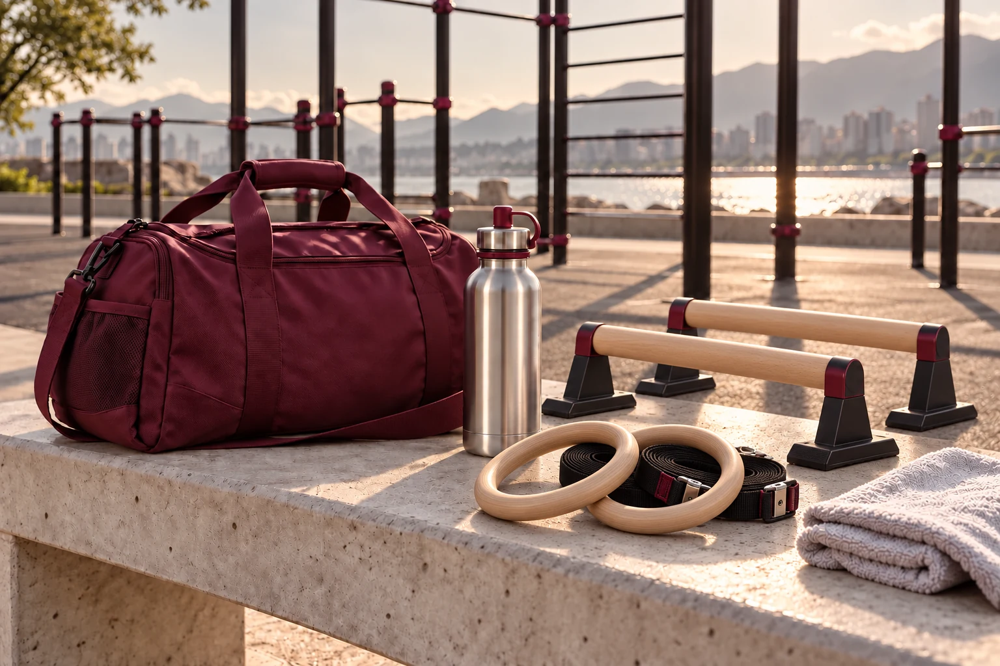
06 / BİLMEKTE FAYDA VAR
Calisthenics çoğunlukla kendi vücut ağırlığını kullanır. Barlar, paralel barlar veya halkalar egzersizleri destekleyebilir. Odak kontrollü hareket, güç ve vücut gerginliğidir.
Üç seans haftalık programı oluşturur. Antrenman sıklığı ve yoğunluğu seviyene ve toparlanmana uygun olmalıdır.
Herkes aynı hareket kalıbını farklı varyasyonlarla çalışabilir. Kontrol, deneyim ve güncel kapasite seçimi yönlendirir.
Başlangıç planlayıcısında seansını ve seviyeni seç. Böylece ne zaman başlamak istediğini ve mevcut temellerini belirleyebilirsin.
Uygun spor kıyafeti ve ayakkabı giy, su getir ve antrenmandan önce havayı kontrol et. Kıyafetini ve yükünü koşullara göre ayarla.
Evet. Üç görsel rehber doğrudan erişilebilir. “Tekniği incele” seçeneğine tıkla. Tam açıklama bu sitede açılır; görseli ayrıca tam boy görüntüleyebilirsin.
Hayır. Temellerle başla ve yükü yavaşça artır. Farklı varyasyonlar mevcut seviyende başlamanı sağlar.
Haftalık üç rehberli seans dahildir. Her seansta en fazla on kişi çalışır.
Spor kıyafeti, uygun ayakkabı, su ve gerekirse havlu. Kişisel antrenman yardımcıları isteğe bağlıdır.
Bir seans ve seviye seçersin. Planlayıcı kişisel veri istemeden veya göndermeden seçimini gösterir. Antrenman yeri ayırmaz.
Ağrı, mevcut hastalık veya belirsizlik varsa katılmadan önce tıbbi görüş al. Şikâyette egzersizi bırak. Antrenman tıbbi danışmanlık veya tedavinin yerine geçmez.
SIRADAKİ ADIMIN BURADA BAŞLAR.